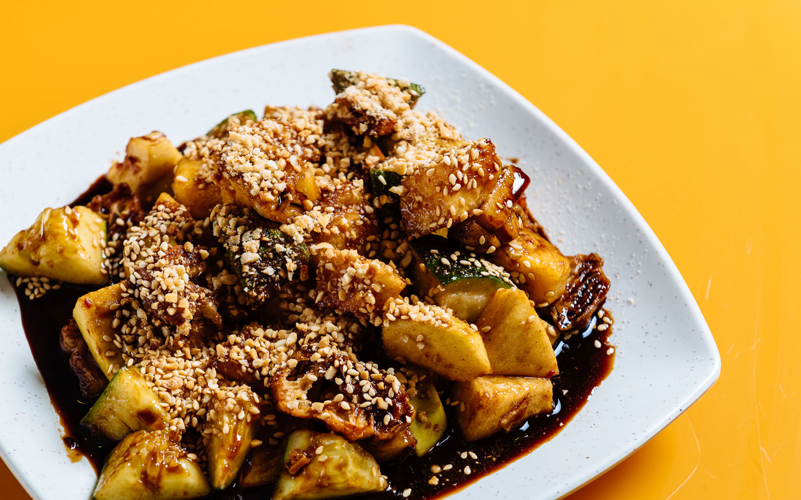
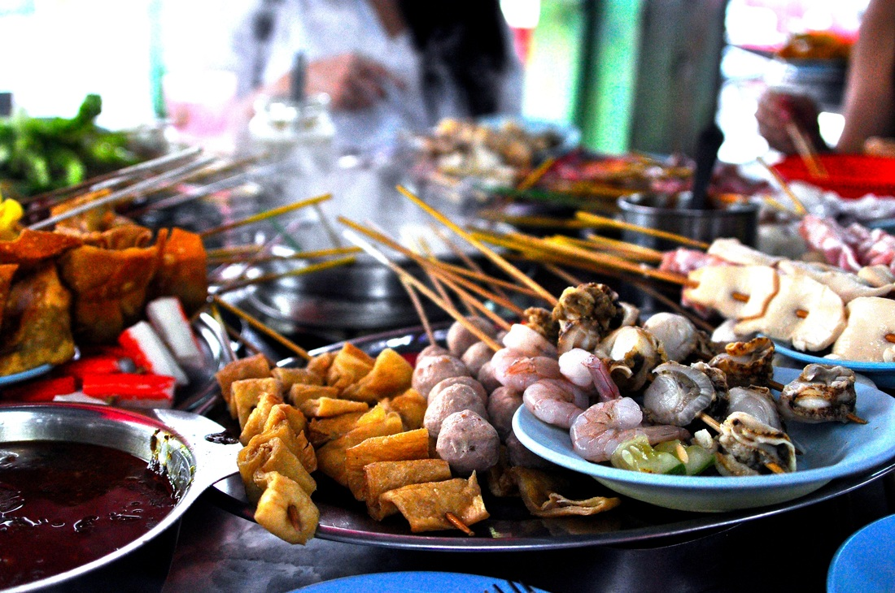

Foods in Penang
Malaysia is one of the country in the world that has various types of delicious foods due to different types of ethnics and cultures that coexist in Malaysia. Penang is one of the states in Malaysia that is full of delicious foods, especially in Georgetown. The foods in Penang is one of the attraction that attracts foreigners to Penang.
-
Char Koay Teow 
When most of the people think about foods in Penang, the first that comes to the mind is Char Koay Teow. Char Koay Teow is a national favaorite food in Malaysia. In Penang, different stalls has their own unique taste Char Koay Teow, with different spices and ingredients used.
-
Assam Laksa 
Assam Laksa is one of the signature dish of Penang. It is a spicy, sour, fish-based soup noodle broth of tamarind juice, chilli paste, lemongrass, topped with prawn paste, mackerel, sliced pineapple and mint. Its taste is guaranteed to be top-notch.
-
Koay Teow Th'ng 
Koay Teow Th'ng or also know as Koay Teow soup typically comes with few slice of pork, fish/eel/meat balls, fish cake, and a broth with flat rice noodles. The soup stock is usually boiled with chicken or pork bones to further enhance its flavor. Different types of stall offers some variations include using duck meat instead of pork. A dry version may also be requested.
-
Rojak Rojak is considered a colloquial representation of variety and mixture. Rojak is usually found in Malaysia and as well as Singapore. Rojak is a kind of salad with various kind of fruits, bean curds, fritters (you tiao), bean sprouts, cuttlefish covered in a thick syrupy peanut sauce, freshly tossed with sweet pineapple slices.
-
Cendol 
Cendol is a famous dessert in Penang. It is a bowl of shaved ice filled with cendol (chewy green rice flour jelly), red beans, coconut milk and brown sugar syrup. It is quite fast for the vendors to prepare a cendol and it is quite easy to prepare a bowl of cendol. This ice cold dessert has a good cooling effect from the hot weather of Penang.
-
Lok Lok Lok Lok is a kind of communal steamboat in Penang, but every ingredient is skewered on a stick so it doesn’t sink or float around in the pot of boiling water in the middle – just grab your stick out of the water once it’s cooked.Yes, since its communal, you will get random strangers seating with you and sharing the same hot pot of water to cook their ingredients. ( How good is that !!!! )